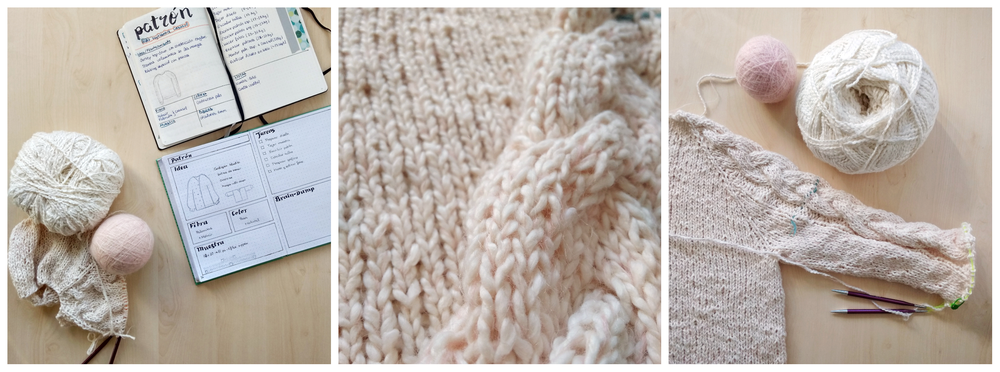
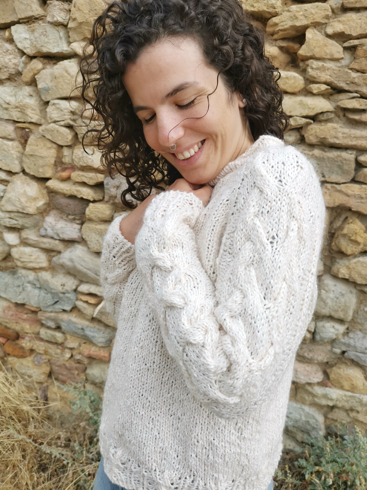

Suéter BAE, reto septiembre casasol
En julio vimos que Casasol volvía a lanzar el reto de tejer con una de sus nuevas calidades y no nos pudimos resistir a participar (si no sabes de qué retos te estamos hablando, en esta entrada te contamos más). El reto esta vez consistía en tejer con su nuevo mohair ya fuera sólo o acompañado. Decidimos combinarlo con el hilo palomita de casasol, un algodón con efecto lana que la verdad nos ha sorprendido y gustado muchísimo.
Hoy os presentamos el diseño que ha realizado Isa para este reto, el suéter BAE. El suéter BAE recibe su nombre del acrónimo inglés before anyone else, cuya traducción más fidedigna es "eres mi todo”, ya que la prenda es como ese abrazo calentito lleno de amor incondicional de esa persona o de ese animal, de tu bae. Tejido desde arriba hacia abajo con la técnica llamada top-down es un suéter raglán que combina el algodón palomita con el hilo mohair, convirtiéndolo en una prenda perfecta para otoño-invierno.
Este suéter estaba lleno de primeras veces para Isa, la primera vez tejiendo con mohair, la primera vez haciendo una construcción tipo raglán, la primera vez haciendo un proyecto de tal envergadura en circulares…
Al principio, hubo que deshacer y rehacer varias veces hasta dar con el dibujo adecuado que resaltara la lana que estábamos utilizando, el palomita aporta un toque rústico y no tiene mucha definición, por lo que al final lo que mejor funcionó fueron unos grandes ochos en las mangas, que aunque pueden parecer complicados son simples combinaciones de los cruces más sencillos. El remate final lo dan los bordes que combinan punto elástico con trenzado y el cuello tortuga a medio camino entre el típico cuello redondo y el cuello cisne, que nos parece que combina muy bien con el diseño y le da un toque original.
El suéter es entretenido de tejer y debido al grosor de las fibras utilizadas también se teje bastante rápido. Al final, lo más desafiante de todo fue compaginarlo con los planes de verano y llegar a tiempo del plazo para el concurso.
Se podría decir que este suéter ha sido muy viajero pues le ha tocado acompañarnos allá donde hemos ido este verano.
¡Estamos muy contentas con el resultado! Nos encanta la combinación de palomita y mohair, los matices y suavidad que le aporta el mohair en combinación con el toque rústico del palomita, pero no nos queríamos quedar ahí. Raquel lo está tejiendo con la lana Valeria Texas una alternativa estupenda y más económica, en esta versión las trenzas quedan más definidas. Ambas versiones son muy calentitas y agradables de llevar. ¿Te animas a tejer la tuya para este otoño/invierno?
P.D.: Próximamente compartiremos también el proceso de diseño del cárdigan CRUSH (diseño de Raquel), de momento, puedes ver las fotos de ambos diseños (y de muchos otros más) en nuestro instagram.
P.D.2: Como primerizas en esto de escribir patrones y diseñar para otras personas, agradecemos cualquier tipo de feedback y crítica constructiva. Así como también te agradecemos que si te gusta, nos compartas y nos des mucho amor :).